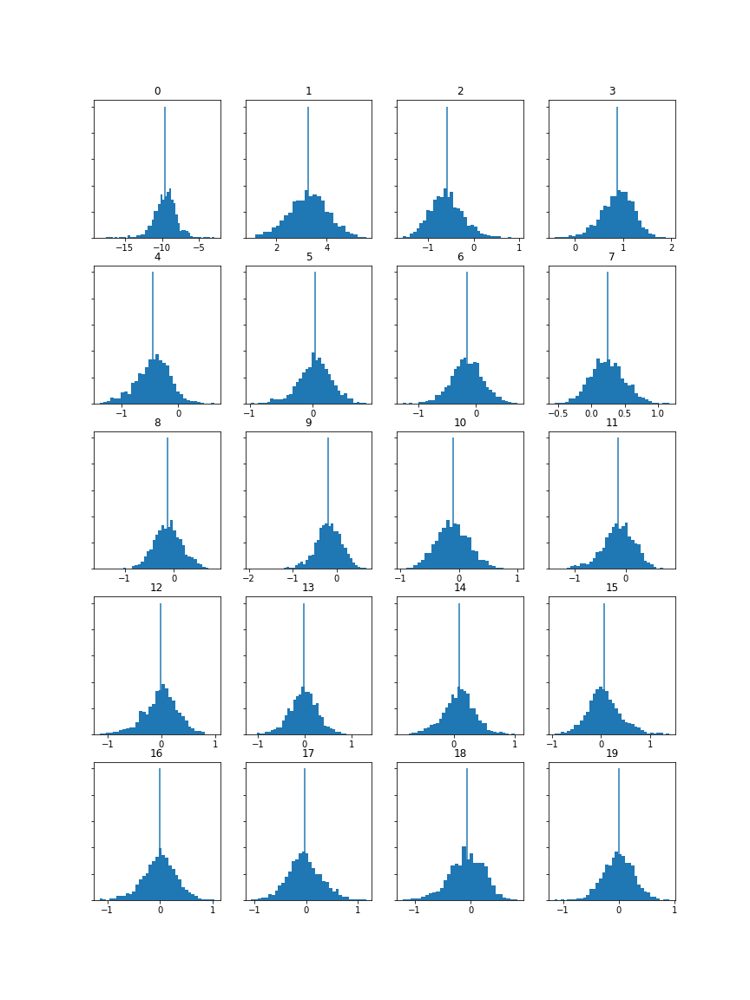

Analysing & Extracting Meaning from Audio
Week 9
Extracting Features
For each track, load and add 3 panes. One should be a Spectrogram, one a Mel Frequency Cepstral Coefficients (MFCCs), and one a Chromagram. Take a screenshot of the panes. Save the three annotation layers as individual CSV files (i.e. the raw data).
Dover Quartet
Audio clip:
Spectrogram (download CSV):

MFCCs (download CSV):
Chromagram (download CSV):
Emerson Quartet
Audio clip:
Spectrogram (download CSV):

MFCCs (download CSV):
Chromagram (download CSV):

Menuhin Competition
Audio clip:
Spectrogram (download CSV):

MFCCs (download CSV):
Chromagram (download CSV):

Compute & Visualize Features
Compute and visualize the histogram of the features for the three tracks.
Dover Quartet
Audio clip:
MFCC Histogram (left) & Chromagram Histogram (right):
Emerson Quartet
Audio clip:
MFCC Histogram (left) & Chromagram Histogram (right):
Menuhin Competition
Audio clip:
MFCC Histogram (left) & Chromagram Histogram (right):
Compare Histograms
For either the MFCC or Chroma feature, compare the histograms for the 3 tracks and highlight/discuss if the histograms capture significant differences between the tracks and if you expected this difference based on listening to the tracks.
Comparing the Chroma Feature histograms, a few differences have been captured:
- Looking at the the levels, the Dover track is significantly louder than both the Emerson and Menuhin tracks. This is displayed by the larger areas that the Dover histogram takes for each feature.
- The Dover track also has more prominance on the "C" feature (top-left) - this is obvious when listening to the clip, as there is a repeated C bass note in a large part of the clip (especially the beginning).
However, there are stil many similarities when analysing the Chromagrams of these three tracks:
- Each track has similar distriutions between features, even though each track represents a different section of a different performance, they are all still recordings of the same piece of music.
- This piece of music is in C minor, so the "C" and "E♭" features are prominant in all three histograms.